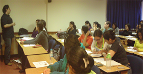

Nombres de Estudiantes
- Alvarado Vallejo, Irma Jeanethe
- Arana Tanaka, Akemi Ilyana
- Barraza Díaz, Emily Isabel
- Baza Norwood, Fabián Alberto
- Caputto Andreetta, Alessandra
- Castillo Rodríguez, Arasny Alejandra
- Cicolini Yepéz, Janette Carolina
- Contreras Carrillo, Daniela Carolina
- Charris Salas, katiuska
- Chinchilla Salazar, Lady Katherine
- García Chirinos, Jeny Joselin
- García Romero, Miriam Josefina
- González Díaz, Yéssica Nohemi
- González Caraballo, Omelys Coromoto
- Janampa Lora, Kelling Iveth
- Martín Escalona, María Alejandra
- Morales Miranda, Berenice
- Moreno Enríquez, Elkin Fabián
- Pérez Otegui, Luis Enrique
- Ríos Benítez, Ana Mercedes
- Torres Ruiz, Carolina Lisbet
- Vallenilla, Andreína Milagros
- Vilela Sánchez, Kirsten Nelly
|
|

(En desarrollo del Trabajo Especial de Grado - TEG)
Nombres de Estudiantes
- Antaki, Gina
- Arias Quispe, Gregorio
- Brito Rojas, Diagnoris del Valle
- Burgos Heredia, Armando Augusto
- De Simone Rengifo, Betty
- Di Vincenzo González, Martinia
- Díaz Cortés, Aleymar Jennifer
- Fernández Rodríguez, María Natalia
- Fossi Gómez, Lisette del Valle
- González Rey, María Gumersinda
- Mardomingo Briceño, Rommel
- Méndez Annunziata, Juana Rosa
- Méndez Annunziata, Marcial Antonio
- Mendoza Sucre, Everlyn Vanesa
- Ortíz Herrera, Carmen Teresa
- Pirela Chourio, Dania Elizabeth
- Ruiz Rojas, Belkys Coromoto
- Ynojosa Pérez, Santos Armando
|